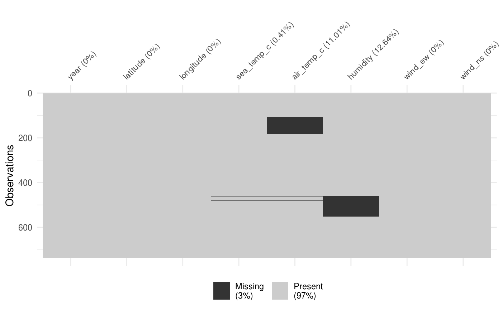
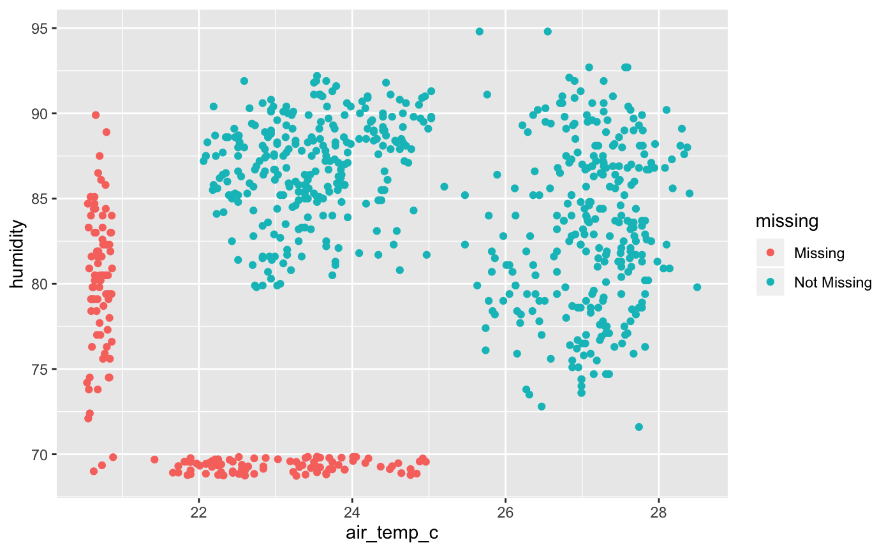
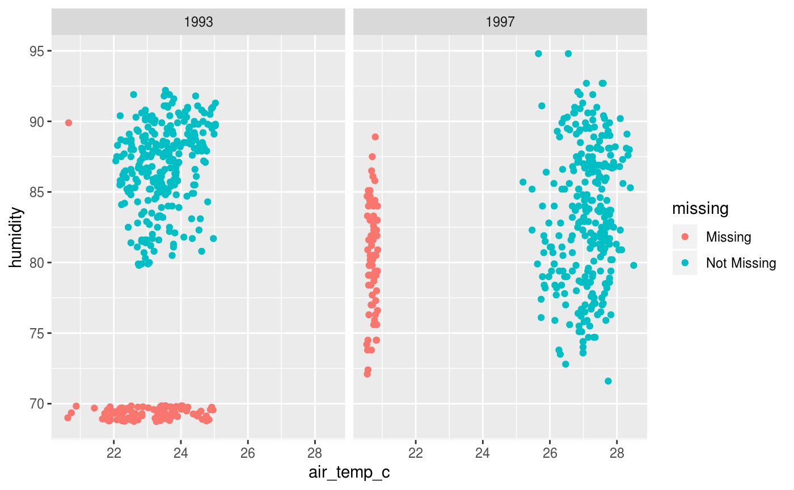
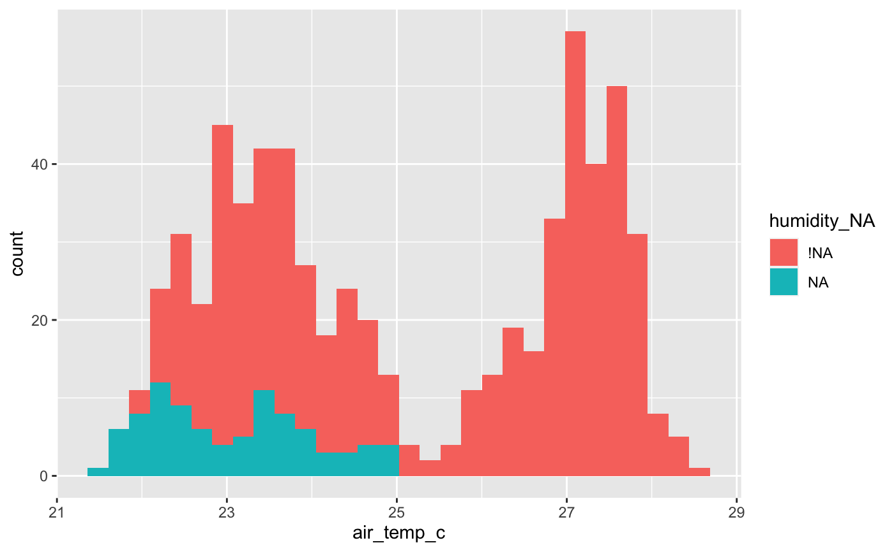
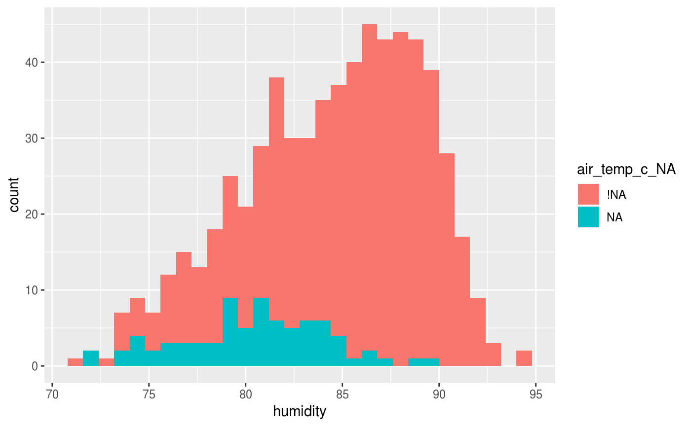

Real-time data from moored ocean buoys for improved detection, understanding and prediction of El Ni'o and La Ni'a. The data is collected by the Tropical Atmosphere Ocean project (http://www.pmel.noaa.gov/tao/index.shtml).
data(oceanbuoys)
An object of class tbl_df (inherits from tbl, data.frame) with 736 rows and 8 columns.
http://www.pmel.noaa.gov/tao/data_deliv/deliv.html
Format: a data frame with 736 observations on the following 8 variables.
yearA numeric with levels 1993 1997.
latitudeA numeric with levels -5 -2 0.
longitudeA numeric with levels -110 -95.
sea_temp_cSea surface temperature(degree Celsius), measured by the TAO buoys at one meter below the surface.
air_temp_cAir temperature(degree Celsius), measured by the TAO buoys three meters above the sea surface.
humidityRelative humidity( meters above the sea surface.
wind_ewThe East-West wind vector components(M/s). TAO buoys measure the wind speed and direction four meters above the sea surface. If it is positive, the East-West component of the wind is blowing towards the East. If it is negative, this component is blowing towards the West.
wind_nsThe North-South wind vector components(M/s). TAO buoys measure the wind speed and direction four meters above the sea surface. If it is positive, the North-South component of the wind is blowing towards the North. If it is negative, this component is blowing towards the South.
library(MissingDataGUI) (data named "tao")
#> # A tibble: 8 x 3 #> variable n_miss pct_miss #> <chr> <int> <dbl> #> 1 humidity 93 12.6 #> 2 air_temp_c 81 11.0 #> 3 sea_temp_c 3 0.408 #> 4 year 0 0 #> 5 latitude 0 0 #> 6 longitude 0 0 #> 7 wind_ew 0 0 #> 8 wind_ns 0 0# Look at the missingness in air temperature and humidity library(ggplot2) p <- ggplot(oceanbuoys, aes(x = air_temp_c, y = humidity)) + geom_miss_point() p# this shows that there are more missing values in humidity in 1993, and # more air temperature missing values in 1997 # what if we explore the value of air temperature and humidity based on # the missingness of each oceanbuoys %>% bind_shadow() %>% ggplot(aes(x = air_temp_c, fill = humidity_NA)) + geom_histogram()#>#> Warning: Removed 81 rows containing non-finite values (stat_bin).#>#> Warning: Removed 93 rows containing non-finite values (stat_bin).